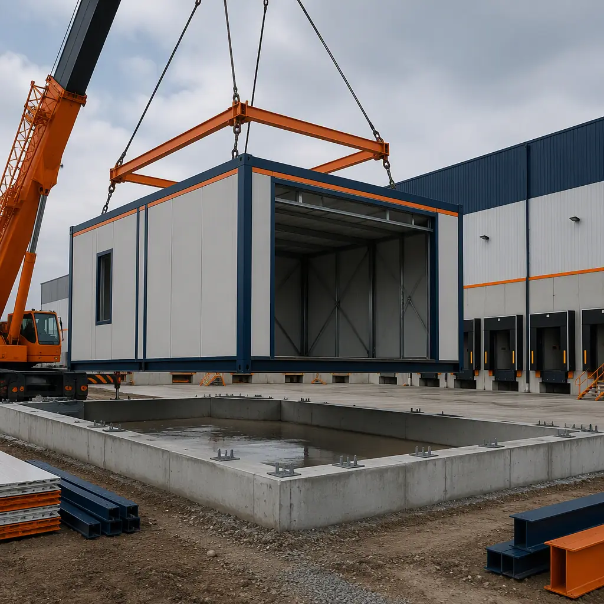
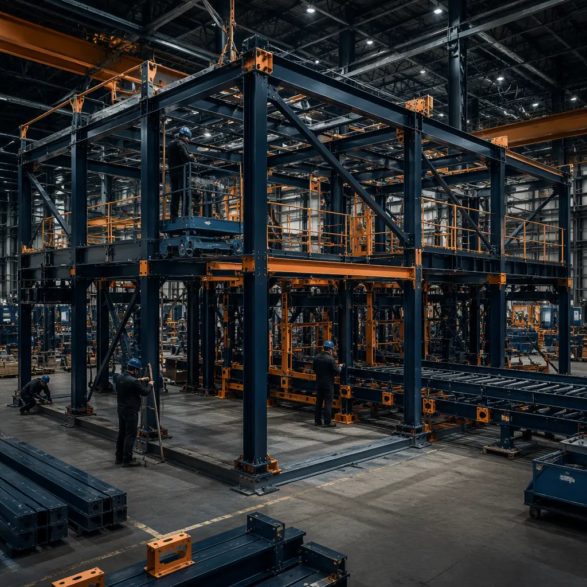
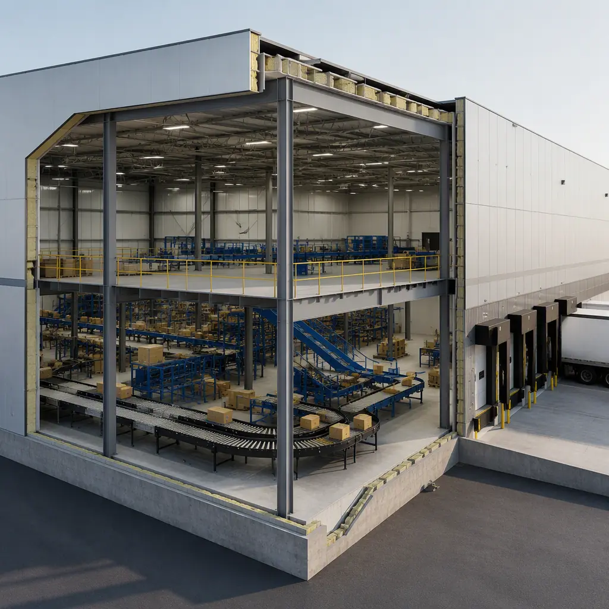

E-commerce fulfillment is a race against the calendar. Peak season arrives on the same date every year — and a 3PL operator that signs a lease in March but cannot open a 200,000 sq ft fulfillment center until January has missed the entire Q4 revenue window. Conventional warehouse construction takes 12–18 months from groundbreaking to racking, which means operators must commit to capacity 2–3 peak seasons in advance, betting on demand that may or may not materialize. Modular e-commerce fulfillment center construction compresses the timeline to 6–10 months — factory production and site work in parallel, with clear-span modules, mezzanine capacity, dock infrastructure, and automation-ready structural design delivered as a coordinated package. This article examines how modular delivery addresses the specific requirements of modern fulfillment operations: clear-span structural design for racking and automation, mezzanine integration for multi-level picking, dock door scheduling and configuration, the structural provisions that make a building automation-ready (AMRs, ASRS, and conveyor systems), and the phased capacity model that lets operators match building supply to order demand.

Why Fulfillment Construction Lags Demand — And How Modular Closes the Gap
Fulfillment centers are structurally demanding buildings: clear spans of 100–150 feet for racking layouts, floor flatness tolerances measured in fractions of an inch for automated vehicles, dock configurations that can absorb 30–80 trucks per day, and power densities that have tripled as automation has spread. These demands push conventional construction schedules outward, and three factors compound the delay.
Steel and site sequencing. A conventional warehouse is built in a strict sequence: foundations, structural steel, enclosure, slab, then interior systems. Each step depends on the previous one completing on site, and weather, labor availability, and material lead times stretch the critical path. Modular construction breaks this sequence: the structural system — clear-span steel frames and floor modules — is fabricated in the factory while site work proceeds concurrently. The building enclosure and interior systems are factory-integrated into modules, so the site installation window is measured in weeks, not months.
Automation retrofits create schedule risk. Many fulfillment operators lease a building first and retrofit automation later — a sequence that routinely requires structural reinforcement (mezzanine loads, conveyor support, AMR floor overlays) that conventional buildings were not designed for. Modular construction inverts this: the building is engineered for automation from the start, with the structural capacity, floor tolerances, and power distribution sized for the automation package before the modules are produced. For the technical framework of how prefab buildings handle heavy structural and MEP loads, see our modular industrial and warehouse construction guide.
Capital is committed before revenue certainty exists. Fulfillment demand is lumpy — a new client contract, a category expansion, or a regional volume shift can create a 100,000 sq ft capacity need in a quarter. Conventional construction cannot respond at that speed, so operators either overbuild speculatively or lose revenue. Modular delivery offers a third path: phased capacity that opens in increments, with the first phase generating revenue while later phases are in production. For the capital-side framework, see our modular construction cost per square foot guide, which covers the delivered cost comparison across building types.

Clear-Span Structural Design for Racking and Automation
The structural heart of a fulfillment center is the clear-span frame — the unobstructed interior volume that accommodates pallet racking, pick modules, conveyor systems, and automated storage. Modular fulfillment construction achieves this with the same heavy-section steel approach used across industrial prefab: primary frames engineered for clear spans up to 150 feet, with the interior free of columns that would disrupt racking layouts or automation paths.
Column-free racking bays. Pallet racking layouts are planned in bays — typically 40–60 foot bays with rack depths of 40–60 feet — and any interior column forces the layout to break around it, wasting 5–10% of floor area and complicating the pick paths. Modular clear-span frames eliminate interior columns entirely, so the racking layout is continuous and the pick density per square foot is maximized. The frames are factory-welded with connection details verified by the manufacturer's QC process, and the floor diaphragm is designed for the concentrated point loads of rack uprights (often 30,000–60,000 lbs per upright base).
Floor flatness for AMRs and forklifts. Automated mobile robots (AMRs) and high-lift forklifts require floor flatness tolerances that conventional slabs struggle to meet: FF/FL ratings of 50/35 or better, with local surface tolerances of 1/8 inch over 10 feet for AMR paths. Modular floor modules are cast and finished in a controlled factory environment, where the flatness tolerances are achievable and verifiable — each module's floor is measured before shipping, with the readings included in the delivery documentation. This is a structural advantage of factory production that field-poured slabs cannot match.
Mezzanine integration. Modern fulfillment operations use mezzanines to double or triple usable pick area: pick modules above, packing below, and conveyor connecting the levels. Modular construction integrates mezzanine capacity into the structural design from the start — the module frames are engineered for the mezzanine dead load (typically 100–150 lbs per sq ft including steel, deck, and equipment), and mezzanine support columns are detailed into the module connections. The mezzanine structure can be factory-fabricated as part of the module package, eliminating the field-fabricated mezzanine that conventional projects add after occupancy.
| Fulfillment Requirement | Modular (Factory-Built) | Conventional Site-Built |
|---|---|---|
| Clear span | Up to 150 ft via factory-welded heavy-section frames | Typically 100–150 ft; field-bolted, weather-dependent erection |
| Floor flatness | FF/FL 50/35+ factory-cast, measured and documented per module | Field-poured; grinding and topping common to meet AMR tolerance |
| Mezzanine capacity | Engineered into module frames, factory-fabricated structure | Field-fabricated after occupancy; often under-engineered for later loads |
| Dock configuration | Dock openings factory-formed, levelers pre-installed, scheduling planned per door | Field-cut openings, levelers installed after enclosure |
| Power density for automation | Pre-installed distribution sized for conveyors, chargers, and IT loads | Field-run feeders; transformer upgrades common for automation |
| Construction duration | 6–10 months factory + site in parallel | 12–18 months sequential site construction |

Dock Design and Scheduling — Throughput Starts at the Door
A fulfillment center's throughput is capped by its dock configuration. Each dock door supports a specific inbound/outbound flow — typically 8–15 trailer movements per door per day depending on the operation — and the dock area must absorb the surge of trucks that arrive in morning and evening windows. Modular construction addresses dock design with factory precision and with scheduling built into the module program.
Dock openings factory-formed. Dock openings in modular construction are formed in the factory as part of the wall module — the opening, the leveler pit, the weather seal interface, and the door frame are all manufactured to the dock equipment specification. The dock leveler and door are installed in the factory, tested, and shipped as a complete assembly. On site, the dock modules are craned into position and connected to the apron, eliminating the field-cutting, leveler installation, and weather-sealing work that conventional projects perform on exposed walls.
Dock scheduling as a design input. The number and configuration of dock doors — 30 doors for a 150,000 sq ft regional facility, up to 80 for a large sortable center — drives the module layout. In modular construction, the dock wall is designed as a series of dock modules, each 12–14 feet wide with a single door, which can be repeated to any door count. The schedule for dock installation is tied to the module delivery sequence: dock modules arrive and are installed with the first crane lifts, so the dock area is operational before the interior fit-out of the rest of the facility is complete.
Integrating dock and yard management. Modern facilities pair the dock with yard management systems — trailer staging, door assignment, and appointment scheduling. The building's contribution is reliable power and data at every door position (for dock lights, leveler controls, and communication systems), which modular dock modules provide as factory-installed infrastructure. The result is a dock area that is operational, tested, and connected when the building is turned over, rather than a dock area that spends the first month of occupancy being commissioned.
Automation-Ready by Design — AMRs, ASRS, and Conveyors
The fulfillment industry's direction of travel is unambiguous: automation density is rising in every segment, from AMR-assisted picking in small facilities to full ASRS (automated storage and retrieval) systems in large distribution centers. The buildings that support this automation are structurally different from the warehouses of a decade ago, and modular construction is engineered for the difference.
Structural provisions for ASRS. ASRS systems are among the heaviest building loads in commercial construction — the storage and retrieval structure is typically 80–120 feet tall within the building envelope, with the building structure and the ASRS structure connected by design. Modular construction coordinates these structures at the engineering stage: the module frames are designed with the ASRS column loads and tie-in points documented, so the automation supplier's structure integrates with the building without field rework. For the broader framework of heavy structural integration in prefab buildings, see our modular heavy industrial construction guide.
Power and data density. Automated facilities draw power in a pattern conventional warehouses never anticipated: AMR charging stations at 50–100 kW clusters, conveyor drives distributed across the floor, robotic workcells with high instantaneous loads, and a data center-grade network backbone for the warehouse control system. Modular fulfillment modules are factory-fitted with the electrical distribution and network infrastructure sized for these loads, with the capacity documented per module. The building arrives automation-ready — the operator connects the automation equipment to pre-installed infrastructure rather than commissioning a field-built electrical system.
Phasing automation with capacity. The strongest automation argument for modular delivery is phasing: an operator can open a Phase 1 facility with conventional racking and manual picking, generate revenue, and add automation in Phase 2 — with the Phase 2 modules engineered from day one for the automation that Phase 2 will contain. The automation readiness is baked into the structural and MEP design of every module, whether the automation is installed now or later. For the temperature-controlled segment of the fulfillment market, see our modular cold storage construction guide, which covers the same phasing and automation logic applied to cold chain facilities.
Phased Capacity — Matching Building Supply to Order Demand
The most consequential advantage of modular fulfillment construction is not speed in the abstract — it is the ability to match capacity to demand in increments. The conventional fulfillment model commits to a building size 18–24 months before occupancy, based on demand projections that frequently miss in both directions. Modular delivery replaces that bet with a sequence of decisions.
The phased model in practice. A 3PL operator planning a 300,000 sq ft facility can commit to Phase 1 (100,000 sq ft) with a 6–8 month delivery, sign the client contracts that the Phase 1 capacity supports, and exercise options for Phase 2 and Phase 3 as volume materializes. Each phase is a complete, operational building — docks, racking, automation infrastructure, and support spaces — not an extension of a construction site. The capital commitment is matched to confirmed demand, and the revenue from each phase funds or offsets the next.
Peak season capacity without permanent overhead. For operators whose demand spikes seasonally, modular delivery supports a hybrid model: permanent capacity for baseline volume plus modular expansion capacity that can be deployed for peak season and relocated or repurposed afterward. The same factory-built modules that carry the Q4 surge can serve another market's peak the following quarter. For the framework of short-term and relocatable industrial buildings, see our modular temporary and relocatable facilities guide.
Site strategy for phased delivery. Phased modular fulfillment requires the site and utility infrastructure to be planned for the full build-out from the start — the foundation layout, utility connections, and dock apron are sized for all phases even when only Phase 1 is committed. This is a planning discipline, not a cost penalty: the site work for the full facility is a small fraction of the total project cost, and committing to it early preserves the option to expand without re-permitting the site.
Comparison: Modular vs. Conventional Fulfillment Center Construction
| Project Dimension | Modular Fulfillment | Conventional Site-Built |
|---|---|---|
| Design + permitting | 3–5 months (module prototype + site permit in parallel) | 6–9 months (full design + permit) |
| Construction duration | 6–10 months (factory + site in parallel) | 12–18 months sequential |
| Automation readiness | Engineered from day one; structural and MEP capacity pre-installed | Retrofit after occupancy; reinforcement and upgrades common |
| Dock delivery | Factory-formed openings, levelers pre-installed and tested | Field-cut after enclosure; extended dock commissioning |
| Capacity phasing | Revenue-generating phases in 6–8 months, options for expansion | Single build-out; expansion = new project |
| Hard cost per sq ft | $90–$160 (shell + dock, varies by automation content) | $110–$190 (varies by market) |
For a decision framework covering schedule, cost, and quality across all industrial building types, see our comparison of modular versus traditional construction.
Is Modular Right for Your Fulfillment Project?
Modular e-commerce fulfillment construction is the strongest fit for operators whose demand is growing, seasonal, or contract-driven: 3PL providers adding capacity for new client wins, retailers opening regional distribution in new markets, and logistics investors who need buildings that can be delivered, expanded, and repurposed as the network evolves. The factory-built fulfillment center — with its clear-span structure, automation-ready MEP, factory-formed docks, and mezzanine capacity — converts the distribution industry's most schedule-critical building type into a predictable industrial product.
The fulfillment industry rewards speed and flexibility above nearly everything else: the operator who can open capacity before the peak season wins the contracts, and the operator who can expand incrementally avoids the capital drag of speculative space. Modular delivery provides both — a committed factory schedule measured in months, and a phasing model that lets building supply track order demand rather than outrun it.